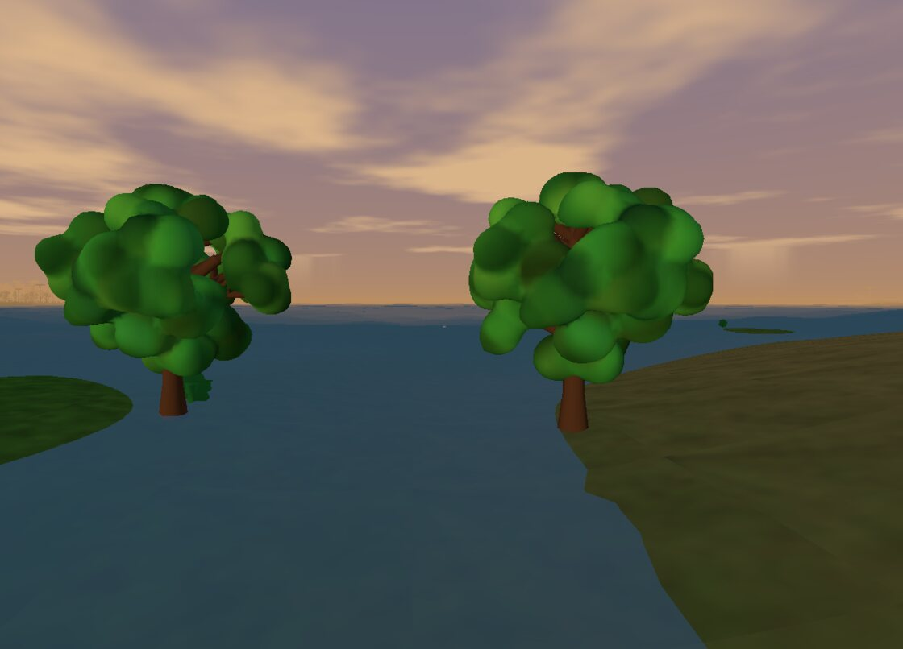
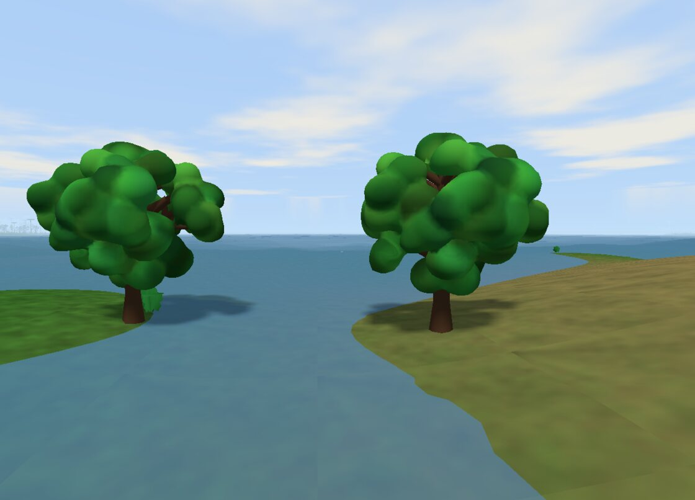
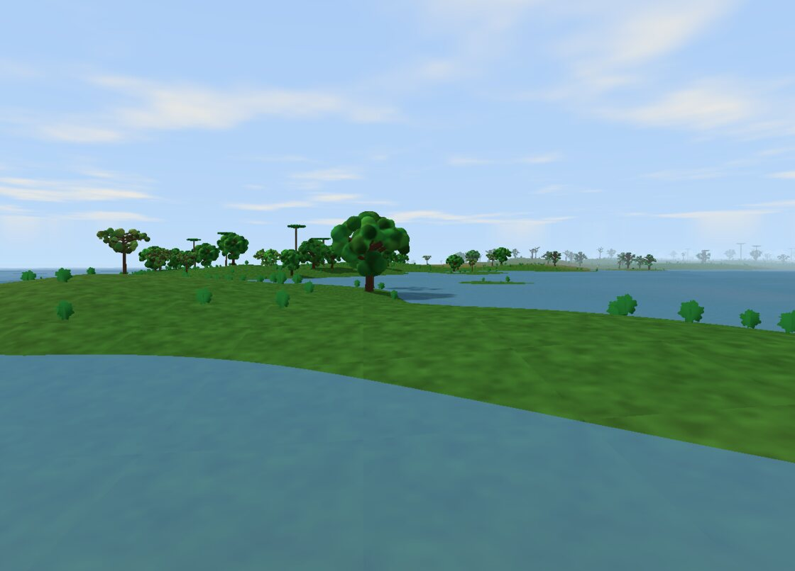
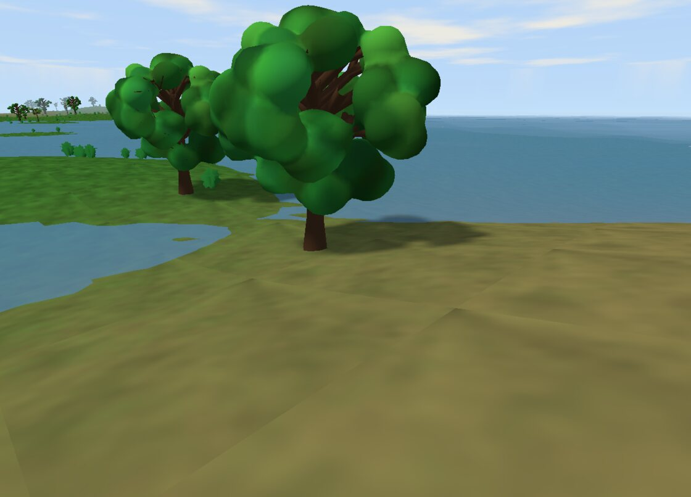
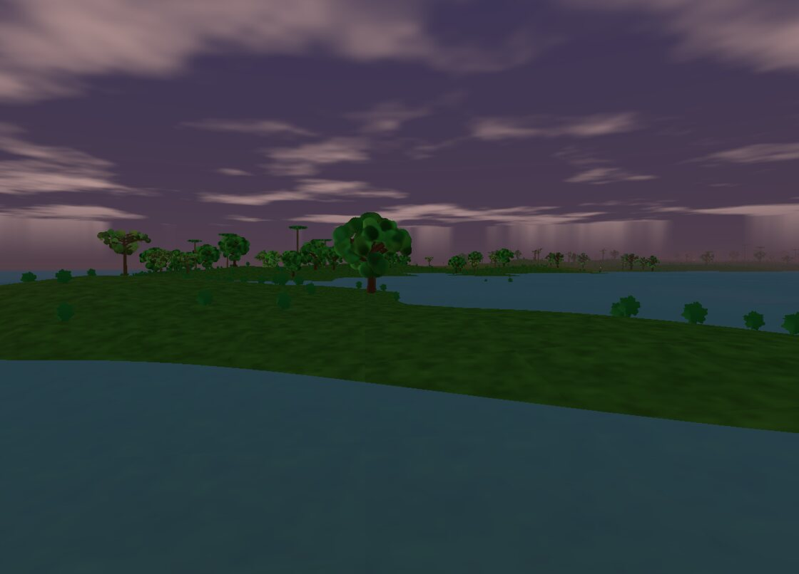

Snow
The frozen crowns of the highest peaks. Above the snow line nothing takes root — only pale, wind-scoured ice.
- Elevation
- above 165 m
- Moisture
- any
- Plant density
- 0%
Flora: none — barren peaks
The Living World
Every FloraForge landscape is sorted into derived biomes, and each biome decides which plants take root. This is a field guide to that biology — the five terrain zones the world is carved into, and the seven plant species that grow across them, each one a fully procedural tree or shrub.
From the world
Frames captured directly from the running engine — terrain, vegetation, and the day/night lighting that ties them together.





Biomes
Two values decide everything about a patch of ground: how high it sits (elevation) and how wet it is (moisture). Climb high enough and vegetation gives way to bare rock and snow; down in the lowlands, moisture alone separates parched desert from dense forest. Each zone paints the terrain a different colour and sets how thickly plants are allowed to grow.
The frozen crowns of the highest peaks. Above the snow line nothing takes root — only pale, wind-scoured ice.
The grey shoulder of the mountains, between the tree line and the snow. Steep, exposed and bare.
Dry, sandy lowland where moisture runs out. Only the hardiest, drought-adapted trees stand a chance, and even then only just.
Open, rolling plains with scattered trees and shrubs. The world's most varied zone — it can host nearly anything that isn't a die-hard forest dweller.
Wet, low-lying land thick with canopy. The densest biome by far — up to seven plants in ten cells — and home to every woodland species.
Elevation is checked first: above 165 m is snow, 120–165 m is rock. Only below the tree line does moisture take over, splitting the lowlands into desert, grassland and forest.
Species
No two trees in FloraForge are identical. Each species is a small recipe — a set of numbers describing trunk taper, branching habit, crown shape, foliage style and colour — that the growth engine expands into a unique 3D plant. The cards below show each recipe's defining traits and where in the world it likes to grow.
The workhorse of the lowlands. A broad, slightly bushy dome on a sturdy, flared trunk — common across both forest and grassland.
The tallest species in the world and the only conifer. A narrow, near-perfect cone of dense needles on a ramrod-straight trunk — partial to higher, cooler ground.
Slim and delicate, with the species' signature near-white bark and a light, drooping oval of bright leaves. A wetland forest tree.
The savanna survivor — a wide, flat-topped umbrella held high on a bare, leaning trunk. The only tree that tolerates the desert's dryness.
A branchless trunk topped by a ring of long, arching fronds. Loves warm lowlands and clusters near water, where it gets a strong placement boost.
Defined by extreme droop — its long branches cascade almost to the ground. A water-lover with the strongest near-water pull of any species.
The world's only shrub — knee-high, many-stemmed and densely leaved. It fills in the understorey wherever oaks and birches leave room.
Launch the browser build and fly across the biomes for yourself — or look under the hood at how the engine grows and streams them.
Launch FloraForge Inside the Engine